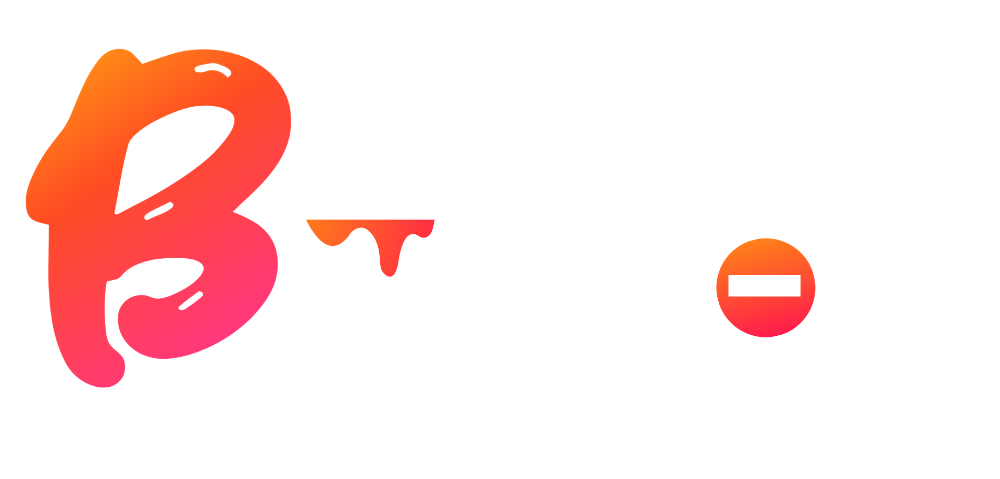

<!-- homesplits/bucket.html -->
<section class="bucket-hero" data-split="bucket">
  <div class="bucket-inner">
    
    <p>Discover my abstract art generator and turn your ideas into a unique digital painting.</p>
    <a href="#" class="bucket-cta">Create</a>
  </div>
</section>

<script>
/* Parallax background */
const hero = document.querySelector('.bucket-hero');
window.addEventListener('scroll', () => {
  const offset = window.scrollY * 0.1; // gentle
  hero.style.setProperty('--bg-shift', `${offset}px`);
});

/* Mouse-follow rainbow hover for CTA */
const cta = document.querySelector('.bucket-cta');
cta.addEventListener('mousemove', e => {
  const rect = cta.getBoundingClientRect();
  const x = ((e.clientX - rect.left) / rect.width) * 100;
  const y = ((e.clientY - rect.top) / rect.height) * 100;
  cta.style.setProperty('--x', `${x}%`);
  cta.style.setProperty('--y', `${y}%`);
});
</script>
